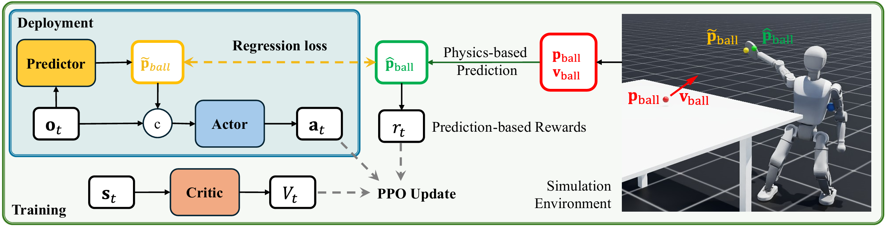

Humanoid table tennis (TT) demands rapid perception, proactive whole-body motion, and agile footwork under strict timing—capabilities that remain difficult for unified controllers. We propose a reinforcement learning framework that maps ball-position observations directly to whole-body joint commands for both arm striking and leg locomotion, strengthened by predictive signals and dense, physics-guided rewards. A lightweight learned predictor, fed with recent ball positions, estimates future ball states and augments the policy’s observations for proactive decision-making. During training, a physics-based predictor supplies precise future states to construct dense, informative rewards that lead to effective exploration. The resulting policy attains strong performance across varied serve ranges (hit rate ≥ 96% and success rate ≥ 92%) in simulations. Ablation studies confirm that both the learned predictor and the predictive reward design are critical for end-to-end learning. Deployed zero-shot on a physical Booster T1 humanoid with 23 revolute joints, the policy produces coordinated lateral and forward–backward footwork with accurate, fast returns, suggesting a practical path toward versatile, competitive humanoid TT.

From physics-based prediction of ball trajectory, we define a hit-guidance reward that encourages the robot to move proactively to intercept the ball.
A return-guidance reward that scores each strike based on the predicted landing point and the ball’s height at the net, enabling the robot to refine its strikes and achieve successful returns.
@misc{hu2025versatilehumanoidtabletennis,
title={Towards Versatile Humanoid Table Tennis: Unified Reinforcement Learning with Prediction Augmentation},
author={Muqun Hu and Wenxi Chen and Wenjing Li and Falak Mandali and Zijian He and Renhong Zhang and Praveen Krisna and Katherine Christian and Leo Benaharon and Dizhi Ma and Karthik Ramani and Yan Gu},
year={2025},
eprint={2509.21690},
archivePrefix={arXiv},
primaryClass={cs.RO},
url={https://arxiv.org/abs/2509.21690},
}